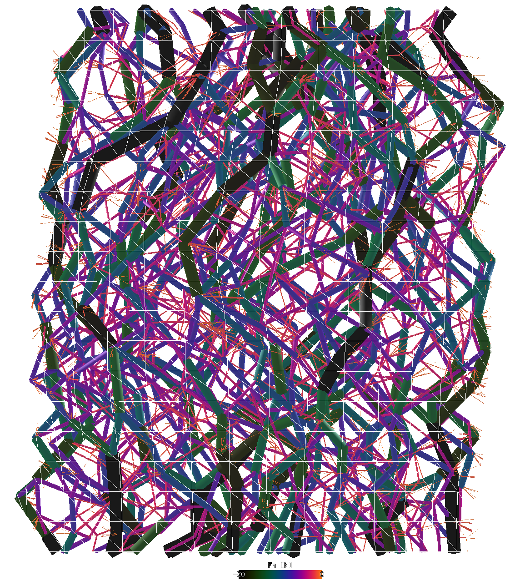
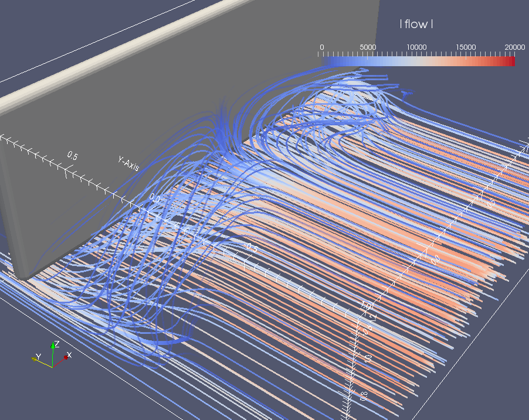

Visualization¶
Woo has a built-in 3d view made for detailed inspection of simulations and seeing what matters. It supportes displacement & rotation scaling, selecting & inspecting objects and many other things.
Force chains¶
These are force chains during the cylindrical triaxial test, with scaled (magnified) nodal displacements:
Particle traces¶
With configurable coloring, length and export to VTK if needed:
Flow analysis¶
woo.dem.FlowAnalysis is useful e.g. for visualizing average flow rates, which can make important features of the processes really stand out:
This is the average flow for the screed wall of which video is shown below:
POV-Ray export¶
woo.dem.POVRayExport harnesses the power of the POV-Ray raytraycer to visualize simulations with advanced texture, lighting and camera options. This movies uses focal blur for realistic blur and bump-mapping for rough surface appearance. The logo itself is a 3d object placed in the scene.
In this detail video, particles are colored by diameter:
Paraview movies¶
While Woo itself concentrates on being a superb simulation tool, the possibility to export to Paraview allows to create beautiful renderings of the scene, which is useful not just for presenting the results to the management, but also as an important aid for understanding the underlying physical processes:
Screed wall simulation (flow analysis image is above):
Tip
Report issues or inclarities to github.